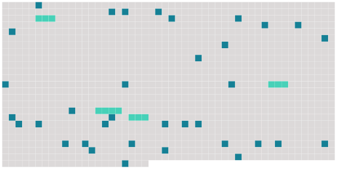

Longueur nb maillons : 39 mentions |
  |
Une nuit, enfin, [nous] avions appris de quoi il s'agissait. [3 phrases]
Ses sanglots étaient si pressés et si déchirants que [nous] retenions [notre] souffle pour ne pas [nous] mettre à crier comme elle. [1 phrases] Mais [Firmin et moi] n'avions nulle envie de dormir. Assis par terre, dans la ruelle étroite qui séparait [nos] deux lits, silencieux et remplis d'étonnement, [nous] réfléchissions aux paroles de douleur et de reproche. [3 phrases]
Et le cœur tout gonflé de regret, en pensant que [nous] ne pouvions rendre à [notre] mère ce bien si précieux, [nous] étions restés longtemps dans la ruelle, glacés par le froid, et serrés l'un contre l'autre comme deux coupables. [4 phrases]
[Nous] nous aimions profondément, et pour mon compte, j'aurais pu jurer que, de toute ma famille, c'était lui qui m'était le plus cher. Le travail des veillées [nous] rapprochait encore. [6 phrases]
[Notre] père s'en mêlait, parfois : [11 phrases] [Notre] père riait et renvoyait Firmin apprendre sa fable.
Il ne se doutait pas que beaucoup de [notre] temps passait à cela. Il y avait aussi une punition de l'école que [nous] étions seuls à connaître, [Firmin et moi] [8 phrases]
Et quand il [nous] arrivait, à [Firmin et à moi] de jouer avec les jumeaux et de les faire rire jusqu'à les rendre malades, elle se tenait à l'écart, sans rire ni se fâcher. Une fois pourtant, [nous] l'avions vue en colère. C'était au cours d'une rougeole qui [nous] obligeait, [Firmin et moi] , de garder la chambre. Pour éviter la contagion, nos parents avaient installé les trois autres à l'autre bout de l'appartement avec défense d'entrer dans [notre] chambre. [Nous] n'étions pas très malades, et les journées [nous] semblaient longues ainsi éloignés de tous. Pour [nous] distraire, [notre] père [nous] apporta des romans d'aventures, et bientôt Firmin ne parla plus que par Brahmane et Vichnou. [5 phrases]
Angèle se lassa de les entendre ; malgré la défense de nos parents elle entr'ouvrit soudain [notre] porte et [nous] dit l'air indigné :
Et, courbée vers [nous] , un pied en avant, et les yeux tout en éclairs, elle [nous] avait menacés d'affreux châtiments venus du ciel, si [nous] avions l'audace de continuer à rire. [1 phrases]
Puis la porte refermée, le chien avait aboyé avec la même fureur, par le trou de la serrure, autour de [nos] lits, contre la fenêtre, et même vers le plafond comme pour faire peur autant qu'à Angèle, aux maladies, aux péchés, et à tous les châtiments dont [nous] étions menacés. |
 |
La ressource peut être téléchargée sur la page Ortolang
Si vous avez des questions ou vous voyez des erreurs, merci d'envoyer un mail à silvia.federzoni89@gmail.com
Site développé par S. Federzoni (contact)